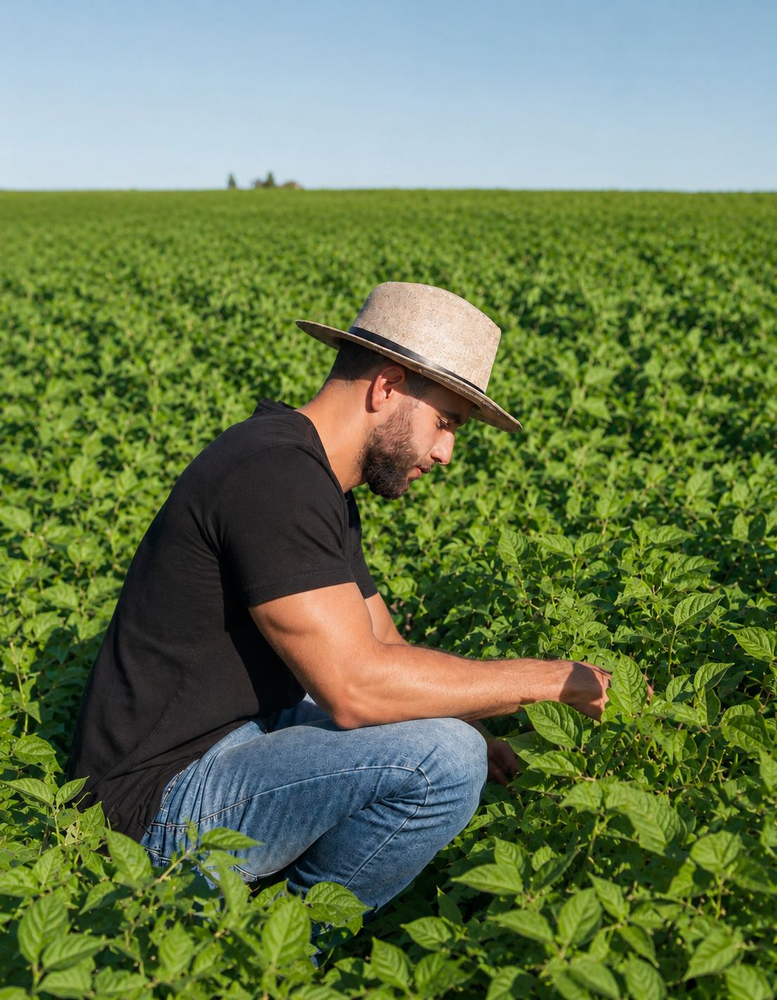

Governança para proteger patrimônio familiar
Placeholder: descrever projeto de organização decisória, ritos de gestão e clareza de papéis em uma operação agro familiar.
Consultoria Estratégica para o Agronegócio
Você foca no que faz de melhor: produzir com excenlêcia.
A DM cuida da esratégia, da gestão e dos
resultados.
Experiência construída entre campo, agroindústria e gestão —
visão estratégica formada de dentro para fora do setor.
Diego Maia é Engenheiro Agrônomo com atuação na interseção entre estratégia, desenvolvimento de mercado e execução técnica no agronegócio. Sua trajetória une campo, agroindústria e gestão — construída de dentro para fora, em projetos reais, com empresas de referência do setor.
Atuou diretamente em planejamento estratégico, reestruturação de processos, governança corporativa e eficiência operacional em grupos sucroenergéticos:
No campo técnico-comercial, desenvolveu vivência prática em sistemas produtivos de grãos, manejo de culturas, indicadores de desempenho agrícola e tomada de decisão orientada por dados — conectando soluções agronômicas às necessidades reais do mercado, com foco em grandes contas e parcerias de longo prazo.
"Resultados consistentes só se sustentam quando pessoas e processos evoluem juntos." — Diego Maia · Fundador e Engenheiro Agrônomo
O que antes era uma fazenda, hoje é uma empresa.
Acreditamos que resultados sustentáveis não são fruto do acaso. São construídos quando pessoas, processos, estratégia e execução caminham juntos — com propósito, método e profundo respeito pela complexidade do agronegócio brasileiro.
O agronegócio produz o alimento do mundo — mas quem cuida de quem produz o agro? Por trás de cada colheita existe uma pessoa. Um líder. Uma família que carrega o peso de cada decisão.
O Cultivando Mentes no Agro é uma iniciativa de Diego Maia que integra saúde mental, performance e agronegócio — partindo da convicção de que resultados consistentes só se sustentam quando pessoas e processos evoluem juntos.
Líderes mais saudáveis tomam decisões melhores. Equipes mais conscientes executam com mais excelência. Negócios que cuidam das pessoas duram gerações.
E também da sala de decisões para fora. É essa dupla perspectiva — prática e estratégica — que nos permite transformar conhecimento real em valor real para o seu negócio.
Definição de metas, análise de maturidade organizacional e liderança de frentes críticas — com clareza sobre onde se quer chegar e como chegar lá.
Reestruturação de processos decisórios, suprimentos e controles que protegem o patrimônio e preparam o negócio para crescer com segurança institucional.
Inteligência técnico-comercial, grandes contas e prospecção — conectando soluções agronômicas às necessidades reais do mercado, com foco em valor sustentável.
Indicadores de desempenho, tomada de decisão orientada por dados e redesenho de processos — gerando margens saudáveis sem perder o essencial da operação.
Desenvolvimento de lideranças, cultura organizacional e clima interno alinhados ao propósito — porque toda estratégia passa pelas pessoas que a executam.
O visitante certo para a DM Consultoria não é definido pelo tamanho do negócio. É definido pela ambição de construir algo que dure.
Quem construiu um patrimônio real no campo e sente que a operação cresceu mais rápido do que a gestão. Produtores que querem profissionalizar sem perder a identidade.
Grupos que precisam organizar a governança, preparar a sucessão ou alinhar visões entre gerações — preservando o legado enquanto constroem o futuro.
Empresas de processamento e beneficiamento que buscam eficiência operacional, maturidade organizacional e posicionamento estratégico no mercado.
Organizações que precisam fortalecer a gestão, desenvolver lideranças internas e construir processos de governança que sustentem o crescimento coletivo.
Indústrias e distribuidoras que querem aprimorar o relacionamento com produtores, estruturar grandes contas e expandir presença com consistência e método.
Empresas no elo entre produção e mercado que buscam eficiência, diferenciação competitiva e estratégias de crescimento sustentável no setor agroindustrial.

Formação agronômica aplicada em usinas sucroenergéticas e grupos agroindustriais de grande porte. Diego conhece o cheiro da terra e fala a língua do conselho.
Tomada de decisão orientada por indicadores reais, análise de maturidade organizacional e diagnóstico honesto — antes de qualquer proposta.
Acompanhamos a implementação, ajustamos a rota e permanecemos ao lado do cliente nas decisões que importam — não apenas na entrega do documento.
Cada intervenção é pensada para gerar valor sustentável — para o negócio, para as pessoas e para o patrimônio familiar construído por décadas.
Decisões tomadas com método, indicadores e critério — uma bússola para momentos de alta pressão e incerteza de mercado.
Governança e processos que preservam décadas de trabalho — e preparam o negócio para o próximo ciclo de crescimento com segurança.
Lideranças desenvolvidas e cultura alinhada ao propósito — porque o maior ativo do agronegócio são as pessoas que o constroem.
Expansão construída sobre fundações sólidas — evolução consistente que resiste aos ciclos do mercado e da natureza.
Diferenciação e presença construídas com consistência — ocupando o espaço que o negócio merece no setor agroindustrial.
Um negócio que carrega valor econômico, história e identidade — construído para durar e se renovar a cada geração.
A timeline organiza a autoridade profissional sem transformar a marca em currículo. Cada marco deve reforçar vivência real no agro e maturidade de decisão.
Imagem futura recomendada: retrato editorial de Diego em ambiente de campo ou agroindústria, com luz natural e composição sóbria.
Base técnica para compreender produção, solo, operação e as decisões que nascem da porteira para dentro.
Experiência em ambientes onde eficiência, pessoas e processos precisam caminhar juntos.
Atuação conectando diagnóstico, maturidade organizacional, posicionamento e execução.
Consultoria para cuidar do patrimônio, das decisões e das pessoas do Agro com método e presença.
“A DM nos ajudou a enxergar oportunidades que estavam diante de nós, mas que passavam despercebidas na rotina. O trabalho trouxe clareza, organização e mais segurança para as decisões estratégicas.”Cliente do Agro · Governança
“Encontramos uma consultoria que compreende a realidade do campo e traduz desafios complexos em ações práticas. O resultado foi mais alinhamento, visão de longo prazo e confiança para seguir crescendo.”Empresa Agroindustrial · Estratégia
Arquitetura preparada para artigos de governança, estratégia, agronegócio, sucessão familiar, saúde mental no agro e Cultivando Mentes no Agro.
Processos informais funcionam até certo ponto. Depois disso, a falta de papéis claros, indicadores e rituais de gestão passa a limitar o crescimento do negócio.
A continuidade de um patrimônio exige diálogo, alinhamento de expectativas e preparação das lideranças que conduzirão o negócio nos próximos anos.
Equipes saudáveis tomam melhores decisões, enfrentam desafios com mais equilíbrio e contribuem para ambientes mais produtivos e sustentáveis.
Cada empresa agroindustrial tem uma história única. Queremos ouvir a sua antes de sugerir qualquer solução.